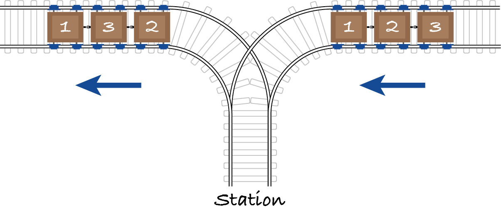

9.4. Trains
Consider a track layout in the shape of the letter Y.
A train formed of wagons numbered 1, 2, 3, …, n comes from the east into the station and needs to leave it to the west with the wagons in a possibly different order. Each wagon can be detached from the others and the station has capacity for all n wagons. Once a wagon is in the station, it can’t be moved back to the east. Once a wagon is in the west track, it can’t be moved back to the station.
The example in the figure is a train with 3 wagons that must leave in the order 1, 3, 2. The following operations achieve that order:
move wagon 1 from the east into the station and out to the west
move wagon 2 into the station
move wagon 3 into the station and out
move wagon 2 out of the station.
The station master wants to know, given the number of wagons and their outgoing order, if it’s possible to achieve that order.
[1]:
from algoesup import test
def rearrange(wagons: int, outgoing: list) -> bool:
"""Check if the incoming train can be rearranged into outgoing.
Preconditions:
- wagons > 0
- outgoing is a permutation of the numbers from 1 to wagons
"""
pass
rearrange_tests = [
# case, wagons, outgoing, rearrange?
['keep order', 3, [1, 2, 3], True],
['invert', 3, [3, 2, 1], True],
['swap', 3, [1, 3, 2], True],
['move to front', 5, [5, 1, 2, 3, 4], False],
# new tests:
]
test(rearrange, rearrange_tests)
9.4.1. Problem definition
Exercise 9.4.1
What kind of problem is this?
Exercise 9.4.2
Which further problem instances should be tested?
Case |
wagons |
outgoing |
rearrange? |
|---|---|---|---|
9.4.2. Algorithm and complexity
Exercise 9.4.3
Outline an algorithm and its ADT(s) to solve this problem.
Exercise 9.4.4
What is the worst-case complexity of your algorithm?
9.4.3. Code and tests
Exercise 9.4.5
Implement and test your approach. Add tests according to your answer to the second exercise.